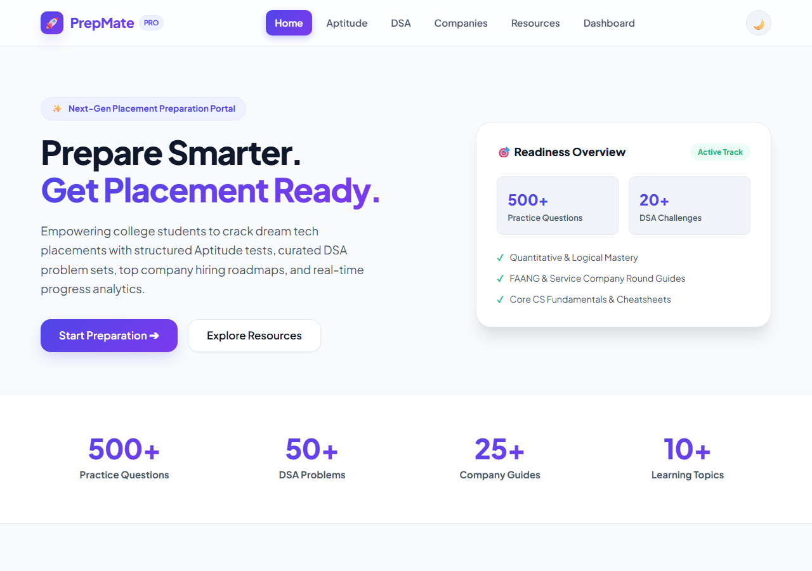
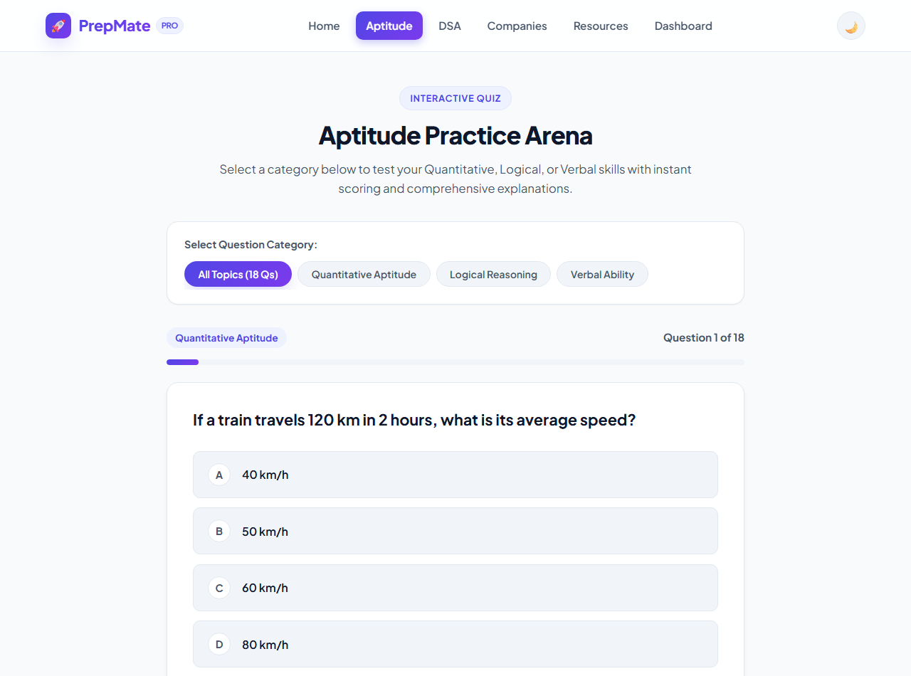
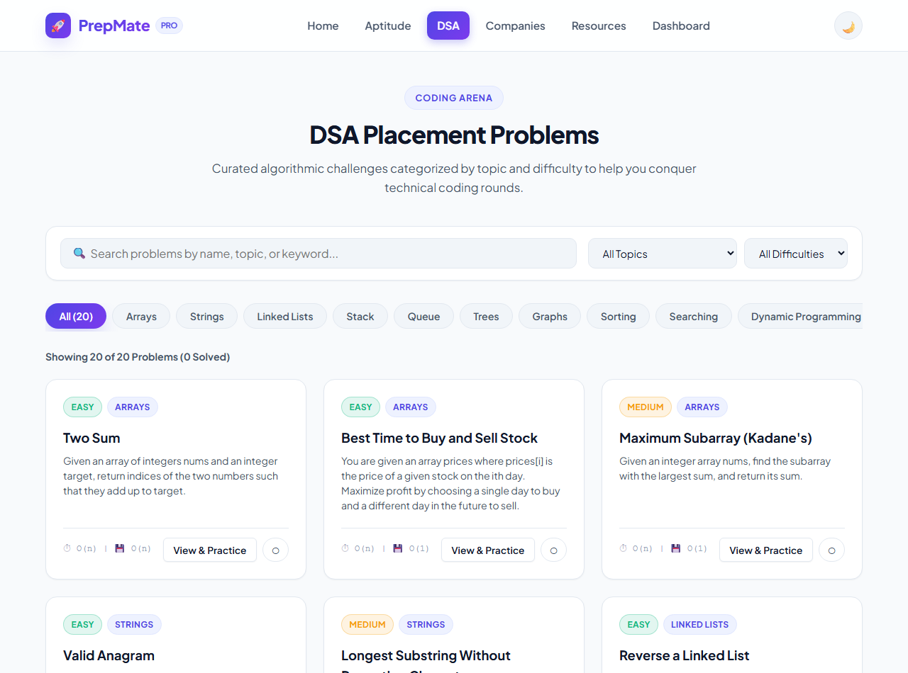
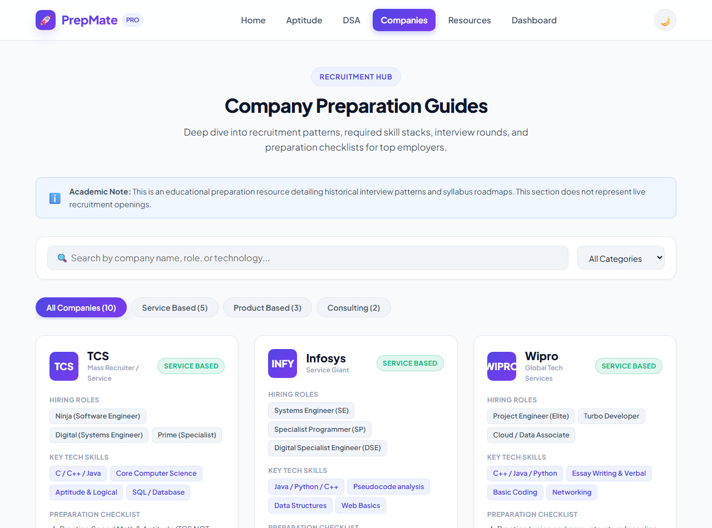
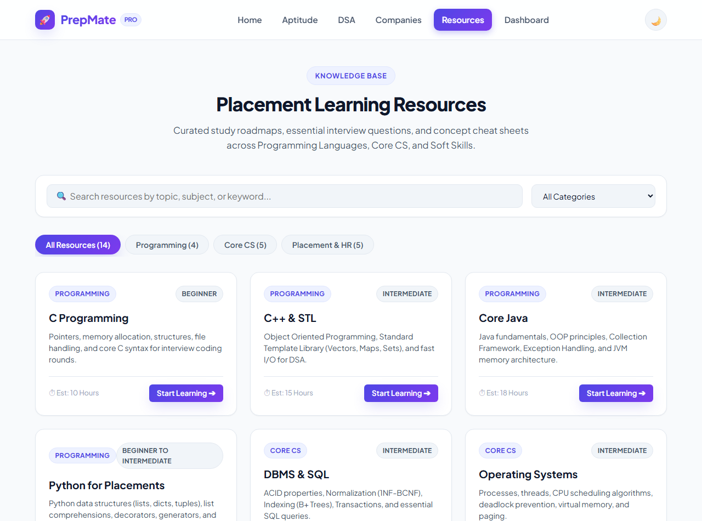
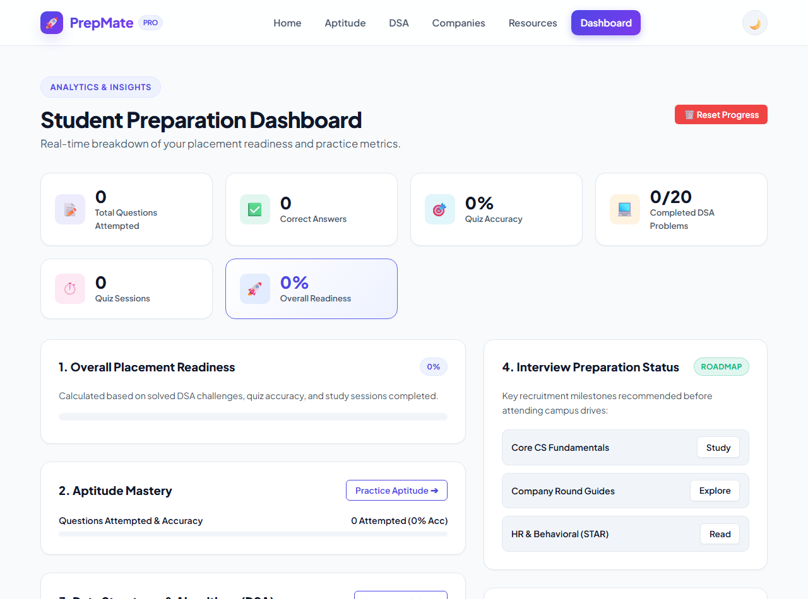
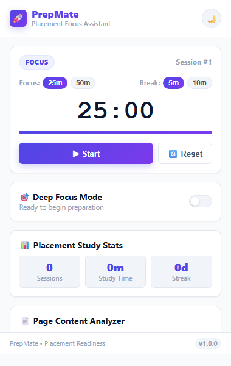

This project demonstrates the practical application of Prompt Engineering and Generative AI assistance (using Antigravity AI by Google DeepMind) to build two end-to-end, production-grade applications for campus placement preparation:
Sample Original Output: A basic HTML page with plain styling and non-functional buttons.
Sample Improved Output: A comprehensive 6-page responsive web portal with custom CSS variables, Dark/Light mode, interactive state handling, and zero external dependencies.
Observation: Adding role context, explicit framework constraints, and structured output patterns generated modular, maintainable, and bug-free code.
Sample Original Output: A simplistic alert-based score calculation without category filters or explanations.
Sample Improved Output: An interactive quiz arena with category filters, dynamic progress bars, detailed accuracy breakdown, and step-by-step mathematical review.
Observation: Specifying exact state keys and review requirements produced an assessment system ready for deployment.
Sample Original Output: A Manifest V2 popup timer that resets whenever the user closes the popup.
Sample Improved Output: A robust Manifest V3 extension with continuous background alarm countdowns, system notifications, webpage reading time extraction, and offline storage.
Observation: Explicitly commanding service worker lifecycle patterns prevented timer termination bugs upon popup dismiss.
| Feature / Dimension | Original Prompt Approach | Improved Prompt Engineering Approach |
|---|---|---|
| Clarity & Specification | Low (Vague requirements) | High (Exact file structure, APIs, and keys defined) |
| Context & Audience | Missing | Provided (Engineering students preparing for placements) |
| Architectural Structure | Monolithic / Unstructured | Well-Organized (Separation of Data, UI, and Business Logic) |
| Technology Constraints | Unenforced (Risk of unwanted frameworks) | Strictly Enforced (Vanilla HTML5/CSS3/JS, Manifest V3) |
| Error Handling | Minimal / Missing | Comprehensive (Safe DOM access, URL safety checks) |
| State Persistence | Lost on reload | Persistent via LocalStorage and Chrome Storage APIs |
Zero-shot:
Prompt: "Write CSS custom properties for a student dark/light theme palette."
AI Output: Generated standard CSS variables for surfaces, text, and primary indigo-violet accents.
Observation: Works effectively for well-defined standard styling tokens.
One-shot:
Prompt: "Format a DSA problem with title, topic, difficulty, complexity, and hints following this sample: [Sample Object]. Now format Binary Search and Kadane's Algorithm."
AI Output: Produced uniformly structured problem data matching the schema.
Observation: Guarantees schema consistency across the entire dataset.
Few-shot:
Prompt: "Generate company hiring roadmaps for TCS, Infosys, and Amazon with roles, skills, and rounds following 3 provided exemplar schemas."
AI Output: Generated precise, standardized recruitment guide objects.
Observation: High structural consistency for complex nested data.
Role Prompting:
Prompt: "Act as a Lead Chrome Extension Security Auditor. Review content.js to ensure zero sensitive DOM data is leaked."
AI Output: Refined TreeWalker to strictly filter out password, form, script, and hidden nodes.
Observation: Ensures industry-standard security and privacy compliance.
Chain-of-Thought (CoT):
Prompt: "Explain step-by-step how to handle the Chrome Extension popup close lifecycle so the timer alarm does not terminate."
AI Output: Outlined target timestamp calculation → storage update → chrome.alarms scheduling → popup reopen offset calculation.
Observation: Eliminates state synchronization bugs across asynchronous workers.







Prompt engineering significantly enhances the quality, safety, and reliability of AI-assisted software development. Simple, unconstrained prompts typically produce incomplete or generic code with incompatible libraries. By systematically applying role assignment, audience context, strict architectural constraints (such as vanilla web technologies and Manifest V3 specifications), and predefined response patterns, the generated deliverables become accurate, robust, and directly executable.
In this assignment, Chain-of-Thought prompting resolved complex asynchronous timing challenges in Chrome service workers, while Few-Shot prompting maintained strict data integrity across 18 aptitude questions, 20 DSA challenges, and 10 company preparation roadmaps. Role prompting ensured modern aesthetic standards in Vanilla CSS without relying on heavy third-party CSS frameworks.
This project demonstrates that combining structured prompt engineering techniques with iterative AI-assisted development produces professional, accessible, and high-performance software applications. Both the PrepMate Placement Preparation Web Portal and the PrepMate Chrome Extension are fully functional, thoroughly tested, and ready for deployment.